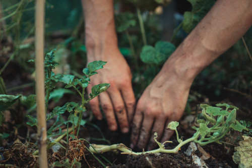

genetic.garden
inspired by nature, developed for nature
Step 1: Understand the Problem
 Companion planting in gardening and agriculture is the planting of different crops for a number of different reasons (read more about it on Wikipedia).
Some crops fit well together, as example onion and carrots or turnips and cucumbers. Others don't fit that well, as example peas and garlic or beans and fennel. See Step 7: About Companion Planting for more information.
If you like to follow the idea of companion planting in your own garding, you have to think about a plan how you will arrange the plants in your beds. The bigger your beds are or the more crops you want to plant, the more difficult this task gets.
The simplest method is to use a trial-and-arror approach and to find a solution that's sufficient for your needs.
Another quite interesting method is to use a genetic algorithm that is presented on this website!
A genetic algorithm creates a set of individuals that represent possible solutions of the problem. Just like nature, the algorithm iteratively applies mutation- and crossover-functions to create descendants. Additionally, a fitness-function ensures that the algorithm only selects the fittest individuals for further iterations. This process is repeated a number of times or just till a satisfying solution is found. More details can be found in Step 8: Learn how the Algorithm works.
Step 2: Design your beds
click on single tiles or click and move to design your beds.(mobile users: please just tap on the tiles)
select as many tiles as you want for your beds.
they can be of any form and don't have to be connected.
Number of Tiles:
Step 3: Select the vegetables, that you want to plant
Number of Tiles:
Step 4: Configure your genetic algorithm
| Option | Value | |
|---|---|---|
| Size of Population | 20 | |
| Number of Iterations | 500 | |
| Mutations per Iteration | 10 | |
| Crossovers per Iteration | 10 |
Step 5: Run it
Just click on 'Start' to run the algorithm.
Some buttons are disabled while the algorithm is active. If you want to reconfigure it, just let it finish or click 'Reset'.
Score: 0, Iteration: 0, Population Size: 0
move your mouse over a tile to see the name of the plant (mobile users: please tap on a tile)
Step 6: Analyse
Step 7: About Companion Planting (for the Gardening Nerds)
Beans
Dill, Strawberries, Kale, Cabbage, Kohlrabi, Lettuce, Curled Lettuce, Radishes, Turnips, Celery, TomatoPeas, Fennel, Garlic, Leek, Onion
Dill
Beans, Peas, Cucumber, Kale, Cabbage, Lettuce, Carrots, Curled Lettuce, Turnips, OnionEndive
Fennel, Kale, Cabbage, LeekPeas
Dill, Fennel, Cucumber, Kale, Cabbage, Kohlrabi, Lettuce, Carrots, Radishes, Spinach, Zucchini, PumpkinBeans, Garlic, Leek, Tomato, Onion
Strawberries
Beans, Garlic, Lettuce, Leek, Radishes, OnionKale, Cabbage
Fennel
Endive, Peas, Cucumber, Lettuce, Curled Lettuce, SageBeans, Tomato
Cucumber
Dill, Peas, Fennel, Garlic, Kale, Cabbage, Lettuce, Leek, Turnips, Celery, OnionRadishes, Tomato
Nasturtium
Radishes, Tomato, Zucchini, PumpkinGarlic
Strawberries, Cucumber, Carrots, Turnips, TomatoBeans, Peas, Kale, Cabbage
Kale
Beans, Dill, Endive, Peas, Cucumber, Lettuce, Leek, Peppermint, Curled Lettuce, Radishes, Turnips, Celery, Spinach, TomatoStrawberries, Garlic, Onion
Cabbage
Beans, Dill, Endive, Peas, Cucumber, Lettuce, Leek, Peppermint, Curled Lettuce, Radishes, Turnips, Celery, Spinach, TomatoStrawberries, Garlic, Onion
Kohlrabi
Beans, Peas, Lettuce, Leek, Radishes, Turnips, Celery, Spinach, TomatoLettuce
Beans, Dill, Peas, Strawberries, Fennel, Cucumber, Kale, Cabbage, Kohlrabi, Leek, Carrots, Peppermint, Radishes, Turnips, Tomato, OnionParsley, Celery
Leek
Endive, Strawberries, Cucumber, Kale, Cabbage, Kohlrabi, Lettuce, Carrots, Celery, Tomato, OnionBeans, Peas, Turnips
Carrots
Dill, Peas, Garlic, Lettuce, Leek, Peppermint, Curled Lettuce, Radishes, Sage, Tomato, OnionParsley
Radishes, TomatoLettuce
Peppermint
Kale, Cabbage, Lettuce, Carrots, TomatoCurled Lettuce
Beans, Dill, Fennel, Kale, Cabbage, Carrots, Radishes, Turnips, TomatoRadishes
Beans, Peas, Strawberries, Nasturtium, Kale, Cabbage, Kohlrabi, Lettuce, Carrots, Parsley, Curled Lettuce, Spinach, TomatoCucumber
Turnips
Beans, Dill, Cucumber, Garlic, Kale, Cabbage, Kohlrabi, Lettuce, Curled Lettuce, Tomato, OnionLeek
Sage
Fennel, CarrotsCelery
Beans, Cucumber, Kale, Cabbage, Kohlrabi, Leek, TomatoLettuce
Spinach
Peas, Kale, Cabbage, Kohlrabi, Radishes, TomatoTomato
Beans, Nasturtium, Garlic, Kale, Cabbage, Kohlrabi, Lettuce, Leek, Carrots, Parsley, Peppermint, Curled Lettuce, Radishes, Turnips, Celery, SpinachPeas, Fennel, Cucumber
Zucchini
Peas, Nasturtium, OnionPumpkin
Peas, Nasturtium, OnionOnion
Dill, Strawberries, Cucumber, Lettuce, Leek, Carrots, Turnips, Zucchini, PumpkinBeans, Peas, Kale, Cabbage
Step 8: Learn how the Algorithm works (for the Computer/Maths Nerds)
The first step of the algorithm is to create a starting population of individuals, whereby each individual represents a legal solution for the underlying problem. So, the first question we have to ask is, how can we model such an inidividual.
The most common way in genetic algoriths is to use a simple string in which each character has a value of a pre-defined set.In the presented application this set looks as follows:
-2 = grass (an empty green tile),
-1 = soil (a tile on which a plant can grow),
0 = beans,
1 = dill,
2 = endive,
...,
26 = onion
As you noticed, each crop has been numbered and has got a number between 0 and 26.
The tiles and the beds that were designed in Step 2: Design your beds, can also be numbered,
and we can assign each tile a value of the previously defined set:
1. tile = -2 (just grass)
2. tile = -2 (also grass)
3. tile = -1 (oh, here we defined a soil-tile)
4. tile = 2 (on this tile, an endive is growing)
... and so on ...
To be mentioned, the orientation doesn't matter. The first tile can be in the upper left or wherever you want, although it is convenient to start in the upper left corner and to continue line by line.
In Computer Science, we talk of an array of signed integers that typically just looks as follows:
[-2, -2, -2, -2, -1, -1, 0, 0, -1, -1, ..., -2, -2, -2, -2]
This array is a possible and valid solution in terms of the genetic algorithm, if the following is true:
- it respects the defined beds of Step 2: Design your beds
- a plant can only grow on a tile that has been defined as a soil-tile and not on a grass-tile
- the sum of each crop corresponds to the numbers
of the selected vegetables in Step 3: Select the vegetables, that you want to plant
They simply can be created randomly by arranging all plants on free soil-tiles.
Afterwards, the algorithm repeats the following genetic-functions for a pre-defined number of iterations,
and based on the selection-function, it also visualizes the best solution in every iteration:
Mutation
The mutation-function is very simple. It randomly selects a number of individuals of the population, clones them and just switches two tiles of each individual.
before the mutation:
[..., -1, -1, 7, -1, ...]after the mutation:
[..., -7, -1, -1, -1, ...]
As it can be seen, the 7 changed its place. The corresponding plant is a Nasturtium and it has been put on a tile that has soil on it.
The only thing one have to care about is, that the grass-tiles are not touched.
This is necessary to ensure that the designed beds remain the same.
Crossover
The crossover-function is a bit more difficult, as it randomly takes two different individuals and creates one descendant out of them.
To create a descendant it walks through the arrays of the parents and randomly selects the value from one of the parents,
as far as that doesn't violate one of the constraints for a legal individual.
If there are some plants left, they can be arranged randomly on the free soil-tiles.
Individual A:
[-2, 3, 7, 4, -2]Individual B:
[-2, 4, 3, 7, -2]
At the first index, both individual have the value -2, which indicates a grass-tiles.
This has to be applied to the new individual:
Descendant:
[-2]At the second index, we randomly select individual A, which has has a plant with the value 3 on it.
As it doesn't violate any constraint, we can apply it to the descendant:
Descendant:
[-2, 3]At the third index, we randomly select individual B, which has again the value 3 on it.
But if we applied it to the descendant, we would violate a constraint (there's only one plant with value 3).
Consequently, we can try the value of the other individual A, which has the value 7 and that's still available.
Descendant:
[-2, 3, 7]At the fourth index, we randomly select individual A and we can apply the value 4 to the descendant:
Descendant:
[-2, 3, 7, 4]Finally, we add another soil-tile and are finished:
Descendant:
[-2, 3, 7, 4, -2]
Selection
After the mutation- and crossover-function have been applied, the population contains more individuals than before.
Therefore, the selection-function selects the best, respectively the fittest individuals of the population for the next iteration.
The rating of an individual is done by comparing each tile with its neighbours
in consideration of their compatibility (see Step 7: About Companion Planting).
If two plants next to each other fit well together, the value 1 is used; if they don't fit together, a value -1 is used.
Addiontially, if two plants are of the same crop, the value -1 is used too, to prevent accumulation of the same plants in a neighborhood. The sum indiciates a value of each individual and can be used to sort the individuals of a population.
Consequently, the size of the population can be cut to its initial size.
Step 9: Modify
 Checkout the sourcecode on GitHub.
Checkout the sourcecode on GitHub.
test it, bug fix it, hack it, fork it!
but don't blame me for bad js code :P
This website uses Konva.js, Chart.js and Bootstrap
Misc
I signed the Karlskrona Manifesto on Sustainability Design.
You should too, it's important.
https://www.sustainabilitydesign.org/signatories/
This website was created and hosted by Peter Garscha.
I'm currently doing my doctoral study on sustainability, requirements engineering and agile software development.
The goal is to develop a sustainability aware Scrum framework.
If you are interested in running a case study in Austria, Germany or Switzerland, with me and your Scrum team,
just write me an e-mail! :-)
Contact me: contact [at] genetic [dot] garden
The development of this website produced CO2. The same is true, when you run the algorithm in your browser.
According to www.websitecarbon.com, this website produces 252.7kg of CO2 equivalent a year.
I have no idea, if this is true, or if it's less or more, but I donated € 81 at www.atmosfair.de for 3,500kg,
which equals a flight from Vienna to New York and back.
By the way, the climate-friendly annual budget of a person is about 1,500kg.
Credits
All photos can be found on Unsplash.
Favicon: Photo by Rohit Ranwa, Understand the Problem: Photo by Jonathan Kemper, Beans: Photo by Matilda bellman, Dill: Photo by Julia Gavrilenko, Endive: Photo by petra cigale, Peas: Photo by Artem Kostenko, Strawberries: Photo by Maksim Shutov, Fennel: Photo by Anurag Arora, Cucumber: Photo by Harshal S. Hirve, Nasturtium: Photo by Maylee, Garlic: Photo by team voyas, Kale: Photo by Heather Gill, Cabbage: Photo by Natasha Skov, Kohlrabi: Photo by Monika Grabkowska, Lettuce: Photo by Nathan Dumlao, Leek: Photo by Immo Wegmann, Carrots: Photo by Bohdan Stocek, Parsley: Photo by David Todd McCarty, Peppermint: Photo by Thúy Lâm, Curled Lettuce: Photo by Stephanie Moody, Radishes: Photo by philippe collard, Turnips: Photo by Christina Rumpf, Sage: Photo by Phillip Larking, Celery: Photo by Milada Vigerova, Spinach: Photo by Nathan Nugent, Tomato: Photo by Tom Hermans, Zucchini: Photo by Louis Hansel, Pumpkin: Photo by Kerstin Wrba, Onion: Photo by Lars Blankers, Misc: Photo by Markus Spiske